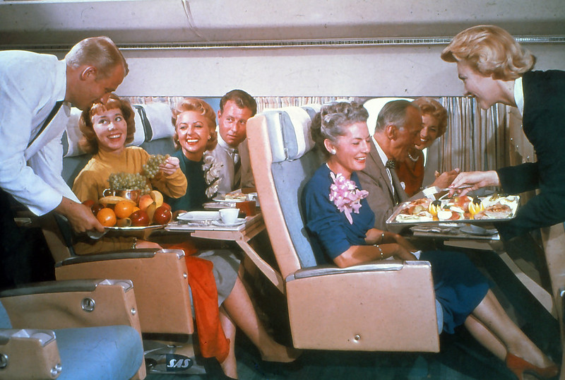

Linda Loo always spends her time on a plane, part of her job is to entertain the passangers. She entertains them by signing the company's jingle, and doing a dance with her fellow co-workers. Usually when shes working, the weather is nice and sunny, but there's stormy days from timw to time.he sounds she hears are usually cars honking, people calling and talking to each other, usual city noises. But when shes working the enviroment gets slightly quieter, just people complaining, asking for items, and the sound of crying babies. But she knows how to handle the situation and help the passangers arrive to their destination happy.
